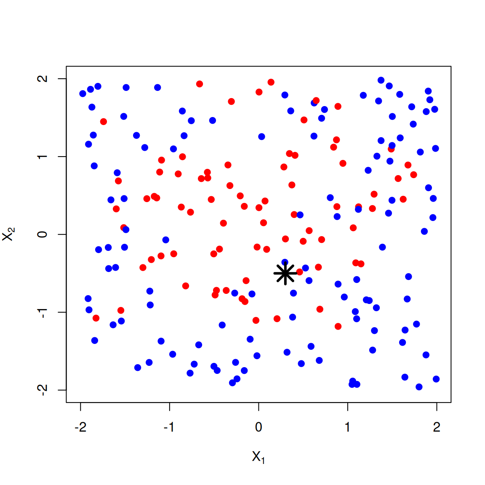
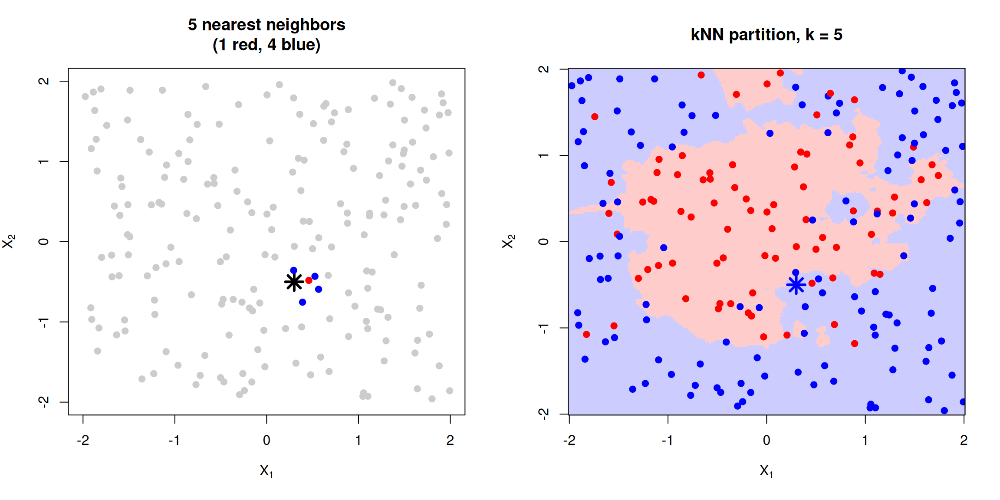
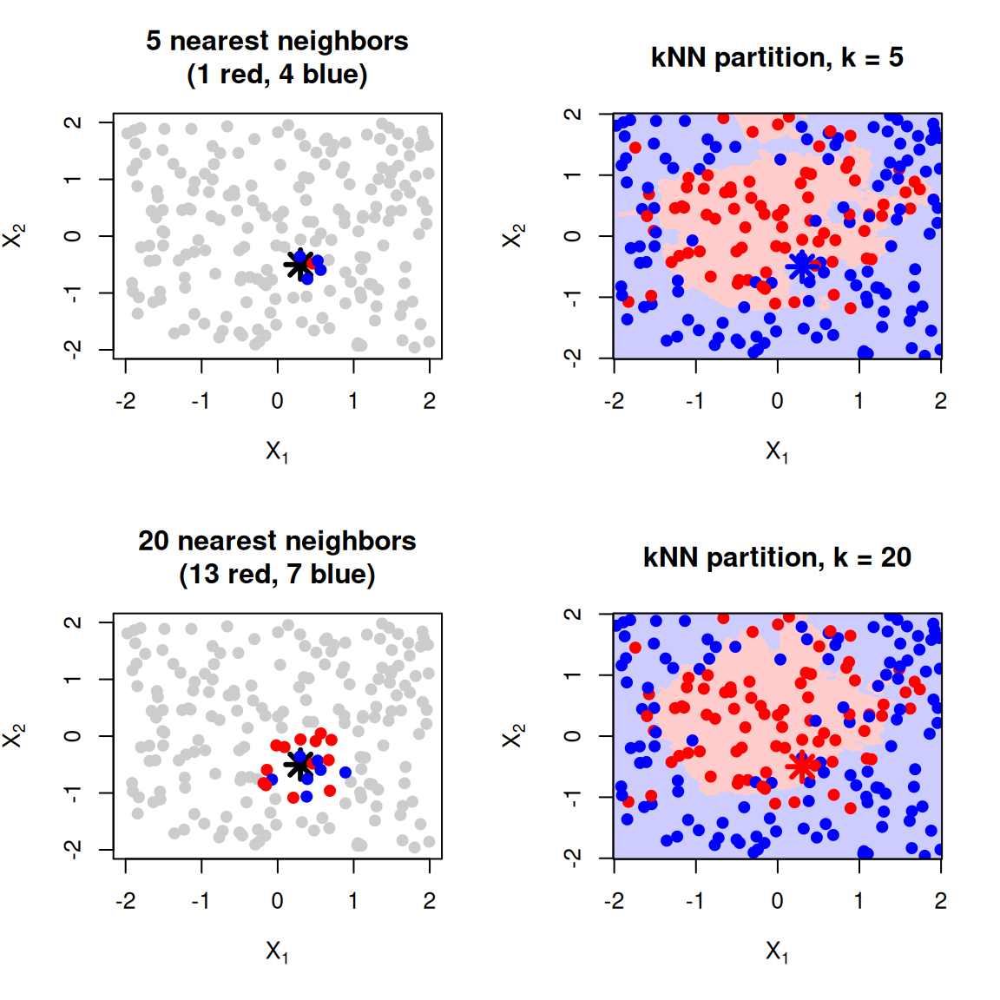
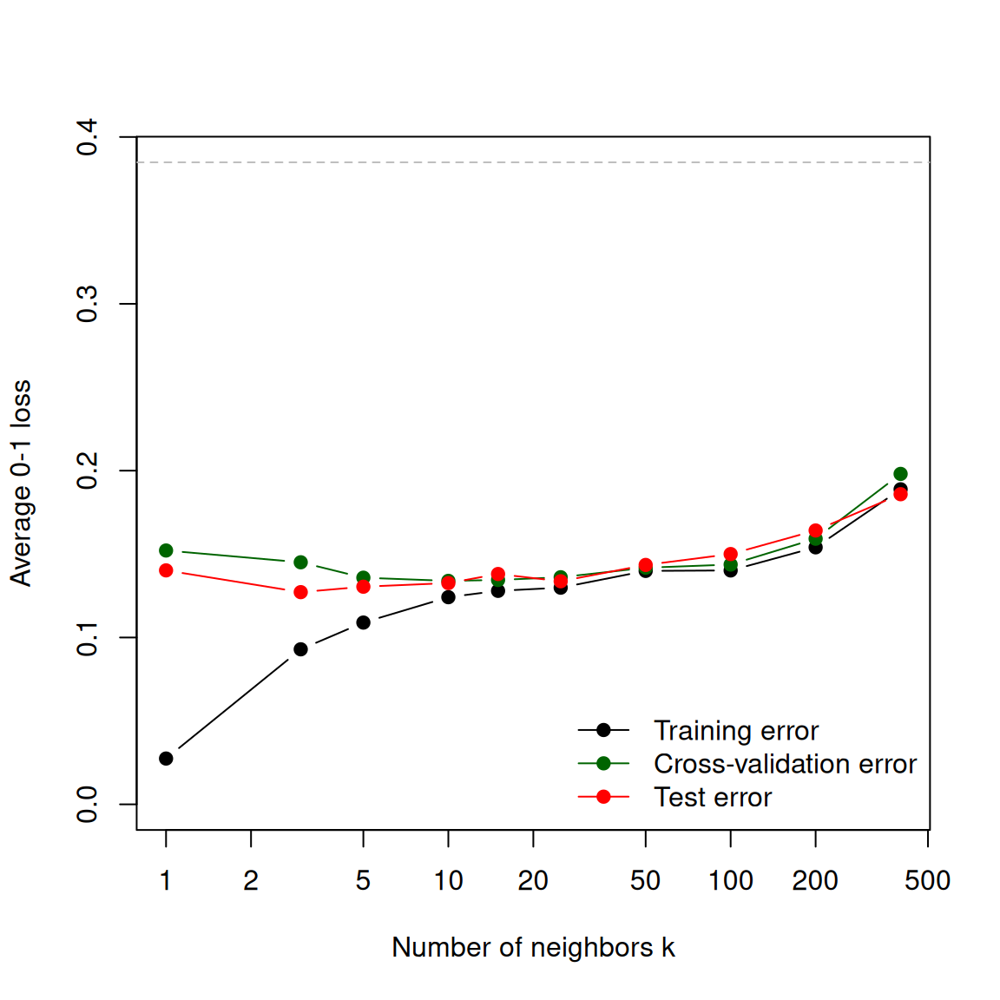
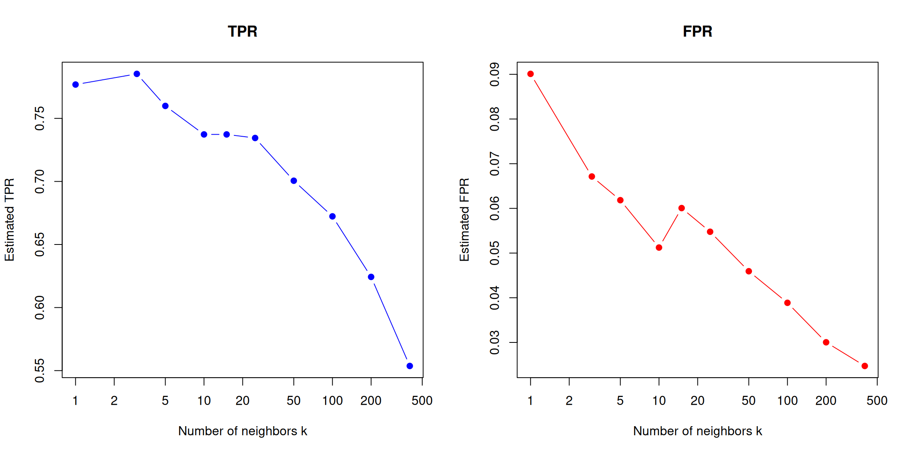
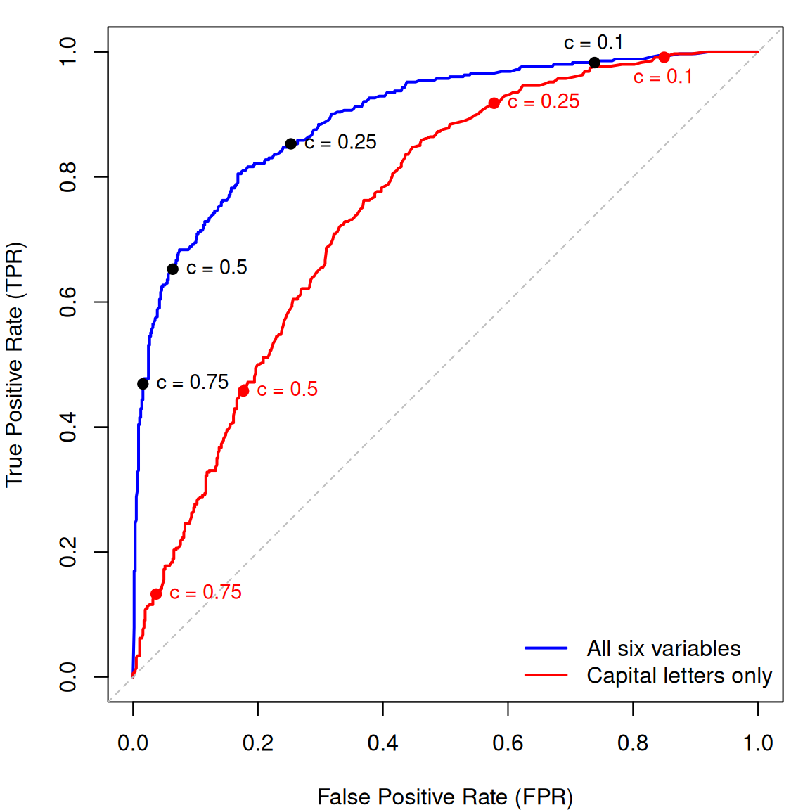

Classification
Corresponding reading
Chapter 8.1 in Agresti and Kateri (2021). However, we will not discuss all of the classification methods introduced there.
So far we have talked about prediction generally, but our examples and loss functions have assumed a continuous outcome \(Y\). But in fact, it is quite common for prediction that we want to predict a categorical outcome, like a disease diagnosis or the identification of an image to a category.
In terms of prediction of categories, our predictions need to be categories. This is unlike our example of logistic regression, where we estimated the continuous probabilities, \(P(Y=1|X)\).
There are two sorts of models for categorical prediction
We could have a \(f(x)\) that directly outputs the categories without explicitly estimating the probabilities i.e. \[f(X)\in \{0,1\}\] There are many such methods, but we will introduce a very simple method of \(k\)-Nearest Neighbors to demonstrate this method.
We can focus on estimating the probability of being in each category, \[p_k(x)=P(Y=k|X=x)\] An example of a method that predicts the probability is logistic regression. However, this doesn’t give us a prediction of \(Y\) directly. A common choice is to say that \(\hat{f}\) is given by the group that has the largest predicted probability, \[\hat{f}(x)=argmax_k \hat{p}_k(x).\] However, we will see other alternatives could also be chosen.
We will go over these two models (logistic and K-nearest neighbors) as examples to illustrate basic principles of classification and how we measure performance in classification.
Note
I am intentionally writing these descriptions in terms of a category \(k\) because while we will focus on just two categories, i.e. \(k\in \{0,1\}\), these principles can all be extended to more than 2 groups.
K-Nearest Neighbors
We are first going to consider an example of the first strategy: direclty estimating a \(\hat{f}(x)\) that gives the category of an observation based on its value \(X\) of predictors.
\(K\) nearest Neighbors (kNN) is a very simple strategy where we decide how to predict the category of an observation with values \(X\) by looking at the predictions in our training that have similar \(X\) values.
Consider the simulated data in Figure 1, where we have training data with either a single predictor variable (left) or two predictor variables (right); the observations are colored either red or blue based on their outcome. We would like to predict the outcome of a new observation, shown as the black star, based on its \(X\).
The idea of kNN is to simply look at the classifications of nearby training data observations to determine the best classification for our new point. Specifically, we choose the \(k\) training observations that are closest to our observation. We can do this for every possible \(X\) and see that this gives a prediction algorithm \(\hat{f}\)

Ultimately a function \(\hat{f}\) that classifies into groups based on predictors \(X_j\) can be thought of as carving the space of \(X\) values into partitions, where each partition is associated with a prediction \(k\).
Choice of \(k\)
Obviously choosing a particular \(k\) for kNN is arbitrary. If we return to our toy data, we can compare the difference if we use \(k=5\) versus \(k=20\) of the closest data points:

For small \(k\), the prediction depends on only a few nearby points; this means the prediction \(\hat{f}\) can change rapidly with \(x\). So smaller \(k\) allow for prediction functions that are more flexible and the possible functions \(\hat{f}\) it can create are more complex. For large \(k\), we average over many points, so the value of \(\hat{f}(x)\) cannot change as rapidly. Thus the \(\hat{f}\) that are created by small \(k\) are smoother functions of \(x\). The number of neighbors \(k\) is a parameter of the prediction algorithm that controls the complexity of the predictor.
0-1 Loss
Notice that I didn’t use a loss function to create my estimator \(\hat{f}\); once I’ve chosen \(k\), my \(\hat{f}\) is defined. This makes it different from the regression strategies we’ve seen, where MLE defines a loss and we choose the best \(\beta\) values that minimize that loss.1
However, there’s no obvious logic to choose \(k\). This is not an uncommon predicament for many modern prediction methods – they do not assume a parametric model for the data, but there is usually a critical parameter (or parameters) needed for the model. And the best parameter varies depending on the data.
We will generally pick this parameter by chosing the one that minimizes our estimate of the generalization error for a particular loss function. Since we are directly predicting the value of \(Y\), a common loss-function to use is 0-1 loss, which simply is an indicator as to whether we misclassified \(Y\), \[l(Y,\hat{Y})= I(Y\neq\hat{Y})=\begin{cases}1& Y\neq\hat{Y}\\0&Y=\hat{Y}\end{cases}\]
Then \[E(l(Y,\hat{f}(X)))=P(Y\neq \hat{f}(X)).\] And we can estimate this quantity on our test data or with cross validation (never on our training data), with \[\bar{err}_{test}=\frac{1}{n_{test}}\sum_{i=1} I(Y\neq\hat{Y}),\] which is just the proportion of our data for which we make an error.
Example 1 (kNN on the spam data) We return to the spam data from the Logistic Regression chapter, where we want to predict whether an email is spam (\(Y=1\)) or not (\(Y=0\)). Now we will use all six variables in the dataset (with the length of the longest string of capital letters on the log scale). We randomly split the data, using 80% of the emails as training data and the other 20% as a test set.
Because kNN finds neighbors based on the distance between observations, variables measured on a larger scale would dominate the distance. So we first standardize each variable, i.e. subtract its mean and divide by its standard deviation (calculated on the training data).
For example, with \(k=10\), the average 0-1 loss on the test set for the spam email data is 0.133. For comparison, simply predicting every email is not spam would have an error of 0.385.
We can then compare the 0-1 loss on our test data for different \(k\).

Like the examples in the last chapter, the training error under-estimates the error for the most complex predictor (\(k=1\)). (The training error with \(k=1\) is not exactly zero because some emails have exactly the same values of all six variables but different values of \(Y\).)
What we have just described here is model selection: choosing among possible models (parameterized by \(k\)). As we already discussed, we will usually rely on cross-validation error for this, rather than requiring a test set. If we have enough data for a test set, we usually reserve it until the very end, after we’ve made all of our choices and have a final model.
Moreover, we can see that the cross-validation error based on the training data, closely follows the test error. This demonstrates that while CV error is the average over different \(\hat{f}\) models – and not the error of any specific one – it can still be helpful in gauging what would be the actual error of a particular \(\hat{f}\).
True Positive Rate and False Positive Rate
Our 0-1 loss is a single number summary of all errors. But just like in hypotheses testing, there are actually different types of mistakes we can make.
Suppose we have a future/unseen observation \((X,Y)\). We can see the possible errors as a 2x2 table, where we compare the possible values of \(Y\) and its prediction \(\hat{Y}=\hat{f}(X)\).
| \(\hat{Y}=0\) | \(\hat{Y}=1\) | |
|---|---|---|
| \(Y=0\) | True Negative | False Positive |
| \(Y=1\) | False Negative | True Positive |
We can consider the probability of a these events with our prediction model \(\hat{f}\).
True Positive Rate (TPR): the probability that we predict an observation to be 1, given that it truly is 1, \[TPR=P(\hat{Y}=1|Y=1)=P(\hat{f}(X)=1|Y=1)\] (also called the sensitivity or recall). The probability of a False Negative is \[P(\hat{Y}=0|Y=1)=1-TPR.\]
This is similar to power, and we want it to be large.
False Positive Rate (FPR): the probability that we (incorrectly) predict an observation to be 1, given that it truly is 0, \[FPR=P(\hat{Y}=1|Y=0)=P(\hat{f}(X)=1|Y=0)\] (equal to 1 minus the specificity, \(P(\hat{Y}=0|Y=0)\)).
This is similar to signifiance level of a test, and we want it to be small.
Note
Notice that both of these measures are the probability of classifying \(Y\) to be \(1\) but under different possibilities of what \(Y\) is. This is like power and signifiance level, where both calculate the probability of a rejection, but under different nulls.
Unlike in hypothesis testing, where we only have one realization of a test, in prediction we will actually have outcomes on every one of our observations in our test data, so we can actually estimate these probabilities from our data. We can create the same 2x2 matrix, but now with the totals of each of the categories over all of the \(n_{test}\) observations (often called the confusion matrix):
| \(\hat{Y}=0\) | \(\hat{Y}=1\) | Total | |
|---|---|---|---|
| \(Y=0\) | True Negatives (TN) | False Positives (FP) | \(TN+FP\) |
| \(Y=1\) | False Negatives (FN) | True Positives (TP) | \(FN+TP\) |
Then \[\widehat{TPR}=\frac{TP}{TP+FN},\qquad \widehat{FPR}=\frac{FP}{FP+TN}.\] Both are calculated within a row of the table, i.e. among the observations with the same true value of \(Y\).
Example 2 For the kNN with \(k=10\), we have the following confusion matrix.
Predicted
Truth 0 1
0 537 29
1 93 261This gives us the following estimates of TPR and FPR:
TPR FPR
0.73728814 0.05123675 The number of neighbors \(k\) also changes the TPR and FPR. Here we plot the estimated TPR and FPR on the test data for different values of \(k\):

Classification with Logistic Regression
We would first note that in logistic regression, we can similarly expand our model to include more than one variable, \[\log \frac{P(Y=1|X=x)}{P(Y=0|X=x)} = \beta_0+\beta_1x_1+\ldots+\beta_p x_p\] or \[P(Y=1|X=x)=\frac{1}{1+e^{-(\beta_0+\beta_1 x_1+\ldots+\beta_p x_p)}}\] We can choose \(\hat\beta_j\) based on MLE estimation, i.e. maximizing the log-likelihood, \(L(\beta_0,\ldots,L_p)\). Again, we cannot do these calculations by hand, but they be derived numerically with the aid of a computer.
This gives us a predicted probability for each group, \(k=0,1\), \[\hat{p}_1(x)=1-\hat{p}_0(x)=\hat{P}(Y=1|X=x)=\frac{1}{1+e^{-(\hat\beta_0+\hat\beta_1 x_1+\ldots+\hat\beta_p x_p)}}\]
We use the same spam data and the same split into 80% training and 20% test data as in Example 1, now fitting a logistic regression with all six variables on the training data.
Call:
glm(formula = binary ~ log.crl.tot + dollar + bang + money +
n000 + make, family = "binomial", data = spamTrain)
Coefficients:
Estimate Std. Error z value Pr(>|z|)
(Intercept) -3.88986 0.17704 -21.971 < 2e-16 ***
log.crl.tot 0.53108 0.03513 15.119 < 2e-16 ***
dollar 7.20819 0.63784 11.301 < 2e-16 ***
bang 1.37565 0.11648 11.810 < 2e-16 ***
money 1.60084 0.23436 6.831 8.45e-12 ***
n000 3.21588 0.42765 7.520 5.48e-14 ***
make -0.07051 0.17921 -0.393 0.694
---
Signif. codes: 0 '***' 0.001 '**' 0.01 '*' 0.05 '.' 0.1 ' ' 1
(Dispersion parameter for binomial family taken to be 1)
Null deviance: 4943.6 on 3680 degrees of freedom
Residual deviance: 3099.1 on 3674 degrees of freedom
AIC: 3113.1
Number of Fisher Scoring iterations: 8Cross-entropy loss
Let’s look at our likelihood for our logistic regression,
\[\begin{aligned} L(\theta) &=\sum_{i=1}^n y_i\log \pi(x_i)+\sum_{i=1}^n(1-y_i)\log(1-\pi(x_i))\\ &=\sum_{i=1}^n I(Y_i=1)\log p_1(x_i)+\sum_{i=1}^nI(Y_i=0)\log p_0(x_i)\\ &=\sum_{i=1}^n\sum_{k}I(Y_i=k)\log p_k(x_i) \end{aligned}.\] We can see finding the MLE as minimizing the average loss, \[\frac{1}{n}\sum_{i=1}^n l(Y_i,p_k(x_i))\] where \[l(Y,p_k(x))=-\sum_{k}I(Y=k)\log p_k(x)\] This is often called cross-entropy loss. Notice that it easily generalizes to any number of categories.
Evaluating Performance
We can use cross-entropy loss to evaluate the performance of our model. Specifically, we could evaluate this quantity on our test data,
\[-\frac{1}{n_{test}}\sum_{i=1}^{n_{test}} \left(I(Y_i=1)\log \hat{p}_1(X_i)+I(Y_i=0)\log \hat{p}_0(X_i)\right)\]
If we evaluate the cross-entropy loss on the test data using its estimated probabilities \(\hat{p}_1(x)\) (and \(\hat{p}_0(x)=1-\hat{p}_1(x)\)). For comparison, we also calculate it for the logistic regression from the Logistic Regression chapter that uses only the length of the longest string of capital letters, and for the simple prediction that gives every email the same probability of being spam (the proportion of spam in the training data):
| Model | Cross-entropy loss (test data) |
|---|---|
| All six variables | 0.400 |
| Capital letters only | 0.572 |
| Same probability for every email | 0.667 |
Smaller values are better; the model with all six variables has the smallest cross-entropy loss on the test data.
We will often use cross-entropy loss to evaluate different possible models.
Classifications and evaluation
To make a prediction, we need to choose how to convert our \(p_k(x)\) into classifications. Above we said we could just pick the group that has the largest value of \(\hat{p}_k(x)\), \[\hat{f}(x)=argmax_k \hat{p}_k(x).\] Equivalently, we can choose a particular cutoff \(c\), \[\hat{Y}=\hat{f}(x)=\begin{cases}1 & \hat{p}_1(x)>c\\ 0 & \hat{p}_1(x)\leq c\end{cases},\] and the choice \(c=0.5\) corresponds to choosing the group with the largest predicted probability.
Evaluating Classification
If we are converting our predicted probabilities into classifications, then it also makes sense to consider the 0-1 loss to measure how our actual classifications perform.
If we return to the spam data, we use the estimated \(\hat{p}_1(x)\) from our fitted model, and then classify each email using the cutoff \(c=0.5\). This gives the following confusion matrix on the test data:
| \(\hat{Y}=0\) | \(\hat{Y}=1\) | Total | |
|---|---|---|---|
| \(Y=0\) (not spam) | TN = 530 | FP = 36 | 566 |
| \(Y=1\) (spam) | FN = 123 | TP = 231 | 354 |
This gives an average 0-1 loss (proportion misclassified) of \[\frac{FP+FN}{n_{test}}=\frac{36 + 123}{920}=0.173\] and estimates of TPR and FPR of \[\begin{aligned} \widehat{TPR}&=\frac{TP}{TP+FN}=\frac{231}{354}=0.653\\ \widehat{FPR}&=\frac{FP}{FP+TN}=\frac{36}{566}=0.064 \end{aligned}\] For comparison, kNN with \(k=10\) had a 0-1 loss of 0.133, with \(\widehat{TPR}=\) 0.737 and \(\widehat{FPR}=\) 0.051. We can summarize these results in a table:
| Method | 0-1 loss | \(\widehat{TPR}\) | \(\widehat{FPR}\) |
|---|---|---|---|
| Logistic regression (c = 0.5) | 0.173 | 0.653 | 0.064 |
| kNN (k = 10) | 0.133 | 0.737 | 0.051 |
Comparing possible cutoffs with ROC Curves
While a cutoff of 0.5 is perfectly reasonable, we could instead choose any \(c\) between 0 and 1. Making \(c\) smaller means we predict \(\hat{Y}=1\) for more observations; thus we will correctly catch more of the true \(Y=1\) observations, but we will also incorrectly call more of the \(Y=0\) observations a 1. This will be a tradeoff between TPR and FPR. This is similar to choosing our signifiance level in hypothesis testing; we are making a tradeoff.
This tradeoff can be very important in deploying a classification, where classifications have real world meaning. A high TPR means we catch most spams. But a high FPR means that real emails that we presumably want to read are classified and junk and we may never see them. I might decide that losing 6% of my emails is not okay. Raising my \(c\) would call fewer emails spam (and clog up my inbox), but result in me losing fewer emails.
A ROC curve (Receiver Operating Characteristic curve) is a plot that evaluates this tradeoff by plotting the TPR against the FPR for all possible cutoffs \(c\).2

As the cutoff \(c\) decreases, we move up and to the right along the curve: we catch more of the spam emails (higher TPR), at the cost of labeling more of the good emails as spam (higher FPR).
Exercise/Question
Notice that the ROC curve is a non-decreasing function. Why is this always true?
Comparing Models
We can also use ROC curves to compare models. A perfect classifier would reach the top left corner, \((0,1)\), while a classifier that just guesses at random will fall along the diagonal line.
In our above ROC curve, we also plotted the ROC of a model that used only one variable, the length of the longest string of capital letters (also fit on the same training data). The model with all six variables has a curve that is closer to the top left corner than the model with just one variable, meaning for any given FPR it has a higher TPR. This means the model using all six variables has uniformally better performance.
When we are comparing many models, the ROC curve can often be summarized by the area under the curve (AUC). This allows for a numerical comparison of these plots. A higher AUC does not mean that it gives uniformly better results across all values of FPR, however; you have to inspect the curves to know that.
| Model | AUC |
|---|---|
| All six variables | 0.897 |
| Capital letters only | 0.751 |
The AUC and the Wilcoxon Rank-Sum Test*
A common property of ROC curves is that the AUC is the same as the statistic of the Wilcoxon rank-sum test (or Mann-Whitney test) that we saw in the chapter on permutation tests. Specifically, calculating the AUC is the same as running a rank-sum test comparing the predicted probabilities \(\hat{p}_1(X)\) of the observations with \(Y=1\) to those of the observations with \(Y=0\). We will show why this is true.
The AUC as a probability
For a fixed prediction function, let \(S=\hat{p}_1(X)\) be the “score” that our classifier gives to an observation, and consider two random observations: \(S_1\), the score of an observation with \(Y=1\), and \(S_0\), the score of an observation with \(Y=0\). Let \(F_1\) and \(F_0\) be the cdfs of \(S_1\) and \(S_0\), and assume they are continuous with densities \(f_1\) and \(f_0\). Then for a cutoff \(c\), \[TPR(c)=P(S_1>c)=1-F_1(c),\qquad FPR(c)=P(S_0>c)=1-F_0(c).\] The ROC curve is the set of points \((FPR(c),TPR(c))\) as \(c\) goes from \(\infty\) (where both are 0) down to \(-\infty\) (where both are 1). The area under this curve is \[AUC=\int_0^1 TPR\; d(FPR).\] To evaluate this integral, we change variables from \(FPR\) to \(c\). Since \(FPR(c)=1-F_0(c)\), we have \(d(FPR)=-f_0(c)\,dc\), and \(FPR\) going from 0 to 1 corresponds to \(c\) going from \(\infty\) to \(-\infty\), so \[\begin{aligned} AUC&=\int_{\infty}^{-\infty} TPR(c)\,\left(-f_0(c)\right)dc=\int_{-\infty}^{\infty} P(S_1>c)\,f_0(c)\,dc. \end{aligned}\] But this last integral is just the law of total probability, conditioning on the value of \(S_0\): if \(S_1\) and \(S_0\) are independent, then \[P(S_1>S_0)=\int_{-\infty}^{\infty} P(S_1>c\,|\,S_0=c)\,f_0(c)\,dc=\int_{-\infty}^{\infty} P(S_1>c)\,f_0(c)\,dc.\] So \[AUC=P(S_1>S_0),\] i.e. the AUC is the probability that a randomly chosen observation with \(Y=1\) gets a higher score (predicted probability) from our classifier than a randomly chosen observation with \(Y=0\).
The estimated AUC and the rank-sum statistic
In practice we estimate the ROC curve from our test data, where we have \(n_1\) observations with \(Y=1\) and \(n_0\) observations with \(Y=0\), with scores \(\hat{p}_i=\hat{p}_1(X_i)\). Our estimated ROC curve uses \(\widehat{TPR}(c)\) and \(\widehat{FPR}(c)\), which is the same as replacing \(F_1\) and \(F_0\) above with the empirical cdfs of the scores in each group. Doing the same calculation with the empirical distributions turns the integral into an average over the observations with \(Y=0\), and \(P(S_1>S_0)\) into the proportion of all \(n_1n_0\) pairs of observations (one with \(Y=1\), one with \(Y=0\)) where the observation with \(Y=1\) has the higher score: \[\widehat{AUC}=\frac{1}{n_0}\sum_{j:Y_j=0}\widehat{TPR}(\hat{p}_j)=\frac{1}{n_1n_0}\sum_{i:Y_i=1}\sum_{j:Y_j=0}I(\hat{p}_i>\hat{p}_j)\] (ties, \(\hat{p}_i=\hat{p}_j\), count as \(\frac{1}{2}\)). The double sum \[U=\sum_{i:Y_i=1}\sum_{j:Y_j=0}I(\hat{p}_i>\hat{p}_j)\] is the Mann-Whitney statistic for comparing the scores of the two groups, and it is equivalent to the Wilcoxon rank-sum statistic. If we rank all \(n_1+n_0\) scores together, the rank of an observation with \(Y=1\) is 1 plus the number of observations with a smaller score. Adding these up over the \(n_1\) observations with \(Y=1\) to get their rank sum \(W_1\), the observations with \(Y=0\) that have smaller scores contribute \(U\) in total, and the other observations with \(Y=1\) that have smaller scores contribute \(0+1+\ldots+(n_1-1)\), so \[W_1=n_1+U+\frac{n_1(n_1-1)}{2}=U+\frac{n_1(n_1+1)}{2}.\] Putting these together, \[\widehat{AUC}=\frac{U}{n_1n_0}=\frac{W_1-\frac{n_1(n_1+1)}{2}}{n_1n_0}.\] So the estimated AUC is just the rank-sum statistic of the scores of the \(Y=1\) group, shifted and scaled to be between 0 and 1.
Why this makes sense
The ROC curve only depends on whether one observation’s score is above or below the cutoff, so it only depends on the ordering of the scores \(\hat{p}_i\), i.e. their ranks – any transformation of \(\hat{p}\) that keeps the same ordering gives the same ROC curve. So it is natural that a summary of the ROC curve is a function of the ranks. Moreover, the AUC and the rank-sum test ask the same question. In the chapter on permutation tests, we described the rank-sum test as testing whether the two distributions are the same, in which case \(P(S_1>S_0)=\frac{1}{2}\), versus whether one population tends to yield larger values. For our classifier, \(P(S_1>S_0)=\frac{1}{2}\) means \(AUC=\frac{1}{2}\), which is the AUC of the diagonal line of a classifier that just guesses at random. So the Wilcoxon rank-sum test comparing the scores of the two groups is a test of \(H_0: AUC=\frac{1}{2}\), i.e. whether our classifier does any better than random guessing.
Example 3 (AUC of the spam classifiers) We can calculate the AUC of our two logistic regression models on the spam test data using the rank sum, and compare it to the area under the ROC curves we plotted above (calculated with the trapezoid rule) and the Mann-Whitney statistic \(U\) that is reported by R’s wilcox.test function (which R calls W).
| Model | \(U\) (wilcox.test) | \(U/(n_1n_0)\) | AUC from rank sum | Area under ROC curve | Wilcoxon p-value |
|---|---|---|---|---|---|
| All six variables | 179702.0 | 0.8969 | 0.8969 | 0.8969 | <2e-16 |
| Capital letters only | 150478.5 | 0.7510 | 0.7510 | 0.7510 | <2e-16 |
The AUC from the rank sum and \(U/(n_1n_0)\) agree exactly, and the area under the plotted ROC curve agrees up to the small error from only evaluating the curve at a grid of cutoffs. The model with all six variables has an AUC of 0.897: for 90% of the pairs of a spam and a non-spam email in the test data, the spam email has the higher predicted probability of being spam. The Wilcoxon p-values show that both models are clearly better than random guessing (\(AUC=\frac{1}{2}\)).
References
Agresti, Alan, and Maria Kateri. 2021. Foundations of Statistics for Data Scientists. Chapman; Hall/CRC.
Footnotes
We have discussed varying the number of predictor variables in multiple regression, but that is distinct from the point here. With kNN, even with a fixed set of predictors, I don’t have a strategy for picking \(k\); if I also consider which variables to use for kNN that’s just yet another parameter.↩︎
In practice, we make a large grid of \(c\) values.↩︎